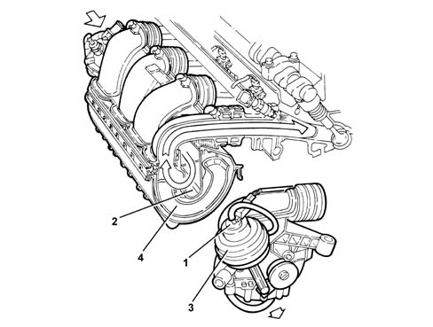
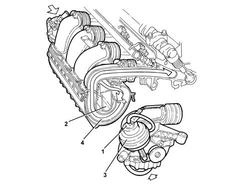
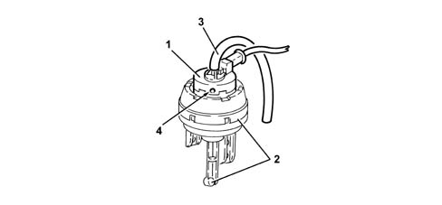

1072D modular inlet manifold (v.i.s.)
- Path
- Descriptions > 10 ENGINE > 1072 INLET AND EXHAUST MANIFOLDS > 1072D modular inlet manifold (v.i.s.)
- Kind
- system description
- Applies to
- engines: 2.0 TS; all production periods
- Interactive page
- https://sloeber94.github.io/elrnDB-a147/en/#/3022431
Applies to: engines: 2.0 TS; all production periods
MODULAR INLET MANIFOLD
It is an inlet manifold of modular length managed by the fuel injection control unit; it allows the volumetric efficiency to be increased, and so:
- improving the torque supply at low-medium speeds
- increasing the power at high speeds.
The manifold consists of:
- two nylon half shells
- an internal oscillating pipe
- a vacuum accumulator inside the manifold
- an actuator controlling the modular intake device, with a built-in three-way solenoid.
Operation
The fuel injection control unit controls the three-way solenoid (1) which places the vacuum accumulator (2) in communication with the pneumatic actuator (3), which in turn, via a linkage, allows the oscillating pipe (4) to move.
The rotation of the oscillating pipe allows the pipes to assume the configurations of short power pipes with rpm up to 2800 rpm and over 5200 rpm

long torque pipes with rpm from 2800 to 5200 rpm.

SWITCHING DEVICE CONTROL ACTUATOR ENABLEMENT SOLENOID
This is a three-way solenoid built into the pneumatic actuator which controls the variable-geometry box, and is controlled by the fuel injection control unit.
Its function is to allow the vacuum present in the vacuum tank (inside the inlet chamber) to act on the pneumatic actuator which controls the oscillating pipe.

1 - Enablement solenoid for changeover device actuator 2 - Modular intake control actuator 3 - Vaccum intake pipe 4 - Atmospheric presure air intake